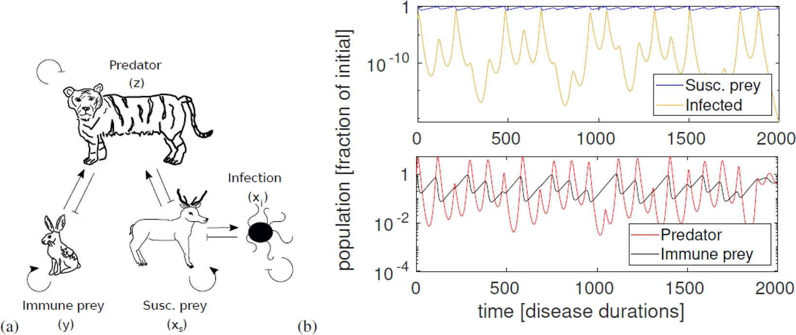

Introduction

Figure 1: Example of predator-prey population cycles altered by disease.Ecological systems demonstrate intricate behaviors emerging from fundamental interactions between predators and prey. When disease dynamics are introduced, these systems become even more complex and fascinating to study. Mathematical models, particularly differential equations and agent-based simulations, offer powerful tools to explore these dynamics and their emergent properties.
In this project, you will implement a predator-prey simulation that incorporates disease transmission, allowing you to investigate how pathogens affect population stability and ecosystem dynamics.
Task
- Model Implementation: Find and implement at least two different predator-prey models with disease dynamics. Create a simulation where predator and prey populations interact.
- Tracking & Visualization: Track population sizes over time and visualize how disease alters traditional predator-prey cycles.
Discussion Points
In your final report, be sure to address the following:
- Implementation Details: Explain your implementation of the core predator-prey-disease model, including disease transmission mechanisms and how they integrate with population dynamics.
- Visualizing Results: Demonstrate your simulation results with visualizations showing population cycles and disease prevalence over time.
- Model Comparison: Discuss differences between the models and any challenges you encountered.
- Emergent Patterns: Vary parameters and show examples of emergent patterns in your simulation, such as population crashes, disease-induced cycles, or extinction events.
- Parameter Analysis: Analyze how different parameters (transmission rates, recovery rates, predation efficiency) affect system stability.
- Alternative Models: Present other models that you have found but not implemented.
- Reflection: Share what you learned about mathematical modeling of complex ecological systems through this project.